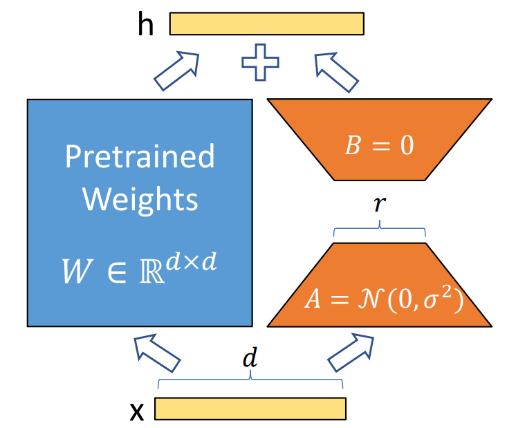
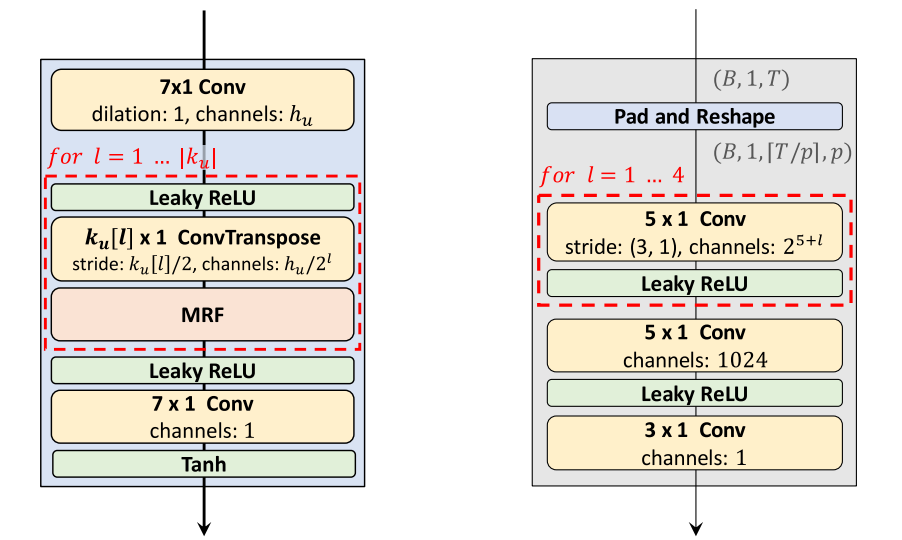
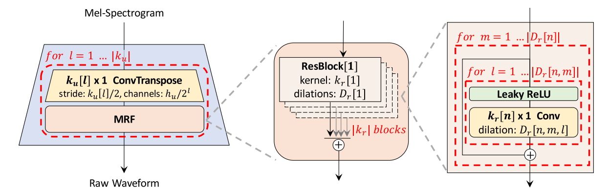
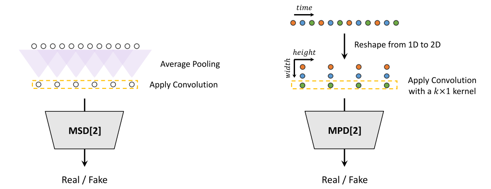

Jungil Kong,Edward J. Hu, Yelong Shen, Phillip Wallis, Zeyuan Allen-Zhu - 2021.6.17
自然语言处理的一个重要范例是对通用领域数据进行大规模预训练，并适应特定任务或领域。随着我们对更大的模型进行预训练，完全微调（重新训练所有模型参数）变得越来越不可行。以 GPT-3 175B 为例 - 部署经过微调的模型的独立实例（每个实例有 175B 个参数）的成本高得令人望而却步。
我们提出了 低秩自适应 (Low-Rank Adaptation, LoRA) ，它冻结了预训练的模型权重，并将可训练的秩分解矩阵注入 Transformer 架构的每一层，大大减少了下游任务的可训练参数数量。与使用 Adam 微调的 GPT-3 175B 相比，LoRA 可以将可训练参数的数量减少 10,000 倍，并将 GPU 内存需求减少 3 倍。

LoRA 的数学原理，假设某个神经网络层的权重矩阵为：
在全参数微调 (Full Fine-tuning) 时，我们会对 \(W_0\) 进行优化：
其中，\(\Delta{W}\) 是训练过程中学习到的参数。LoRA 的关键思想是对 \(\Delta{W}\) 进行低秩分解：
其中 \(A \in \mathbb{R}^{d \times r}\) （低秩矩阵），\(B \in \mathbb{R}^{r \times k}\) （低秩矩阵），\(r \ll \min(d, k)\) （远小于原始权重的秩）。这样，我们不直接训练 \(\Delta W\) ，而是只训练 \(A\) 和 \(B\) ，大幅减少参数数量。
Jungil Kong, Jaehyeon Kim, Jaekyoung Bae - 2020.10.12
最近几项语音合成研究采用了生成对抗网络 (GAN) 来生成原始波形。尽管此类方法提高了采样效率和内存使用率。但它们的样本质量尚未达到自回归和流式生成模型的水平。在这项工作中，我们提出了 HiFi-GAN ，它实现了高效和高保真的语音合成。由于语音音频由具有不同周期的正弦信号组成，我们证明了对音频的周期性模式进行建模对于提高样本质量至关重要。
单个说话人数据集的主观人工评价（平均意见分数，MOS）表明，我们提出的方法表现出与人类质量相似的质量，同时在单个 V100 GPU 上以比实时快 167.9 倍的速度生成 22.05 kHz 高保真音频。我们进一步展示了 HiFi-GAN 对看不见的说话人的梅尔频谱图反转和端到端语音合成的通用性。最后，HiFi-GAN 的小型版本在 CPU 上以比实时快 13.4 倍的速度生成样本，且质量与自回归样本相当。
HiFi-GAN 包含一个生成器和两个辨别器：多尺度 (Multi-scale) 和 多周期 (Multi-period) 判别器。总体架构如下图所示（左边是生成器，右边是周期为 p 的判别器）：

生成器是一个完全卷积神经网络，它使用梅尔频谱图作为输入，并通过转置卷积对其进行上采样，直到输出序列的长度与原始波形的时间分辨率相匹配。
每个转置卷积后面都有一个 多感受视野融合 (Multi-receptive Field Fusion, MRF) 模块 ，该模块并行观察各种长度的模式。具体来说，MRF 模块返回来自多个残差块的输出总和。每个残差块选择不同的内核大小和扩张率，以形成不同的感受视野模式。

我们提出了多周期鉴别器 (MPD)，它由多个子鉴别器组成，每个子鉴别器处理输入音频的一部分周期信号。此外，为了捕获连续模式和长期依赖关系，我们使用 MelGAN 中提出的多尺度鉴别器 (MSD)，它可以连续评估不同级别的音频样本。

Jacob Devlin, Ming-Wei Chang, Kenton Lee, Kristina Toutanova - 2018.10.11
我们引入了一种新的语言表示模型，称为 BERT，代表来自 Transformers 的双向编码器表示。与最近的语言表示模型不同，BERT 旨在通过联合调节所有层的左上下文和右上下文来预训练来自未标记文本的深度双向表示。因此，只需一个额外的输出层就可以对预训练的 BERT 模型进行微调，以创建用于各种任务（例如问答和语言推理）的最先进的模型，而无需对特定于任务的架构进行大量修改。
A. Vaswani, N. Shazeer, N. Parmar, et al. - 2017.06.12
主要的序列传导模型基于编码器-解码器配置中的复杂循环或卷积神经网络。性能最佳的模型还通过注意机制连接编码器和解码器。我们提出了一种新的简单网络架构 Transformer，它完全基于注意机制，完全省去了循环和卷积。
Yann LeCun, Leon Bottou, Yoshua Bengio, Patrick Haffner - 1998.11